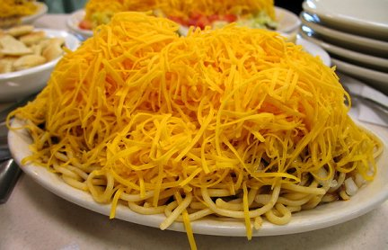
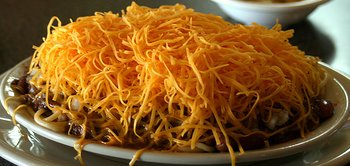

Outside of the state of Texas, Cincinnati, Ohio, is the most chili-crazed city in the United States. Cincinnati prides itself on being a true chili capital, with more than 180 chili parlors. Cincinnati-style chili is quite different from its more familiar Texas cousin, and it has developed a cult-like popularity. What makes it different is the way the meat is cooked. The chili has a thinner consistency and is prepared with an unusual blend of spices that includes cinnamon, chocolate or cocoa, allspice, and Worcestershire. this is truly the unofficial grub of Cincinnati.
The people of Cincinnati enjoy their chili spooned over freshly made pasta and topped with a combination of chopped onions, shredded Cheddar cheese, refried beans or kidney beans, and crushed oyster crackers. If you choose "the works," you are eating what they call Five-Way Chili. Make sure to pile on the toppings - that's what sets it apart from any other chili dish. To test a restaurant for authenticity, ask for a Four-Way. If the server asks you whether you want beans or onions, you know this is fake Cincinnati chili, since Four-Way always comes with onions.
Macedonian immigrant Tom Kiradjieff created Cincinnati chili in 1922. With his brother, John, Kiradjieff opened a small Greek restaurant called the Empress. The restaurant did poorly however, until Kiradjieff started offering a chili made with Middle Eastern spices, which could be served in a variety of ways. He called it his "spaghetti chili." Kiradjieff's "five way" was a concoction of a mound of spaghetti toped with chili, chopped onion, kidney beans, and shredded yellow cheese, served with oyster crackers and a side order of hot dogs topped with more shredded cheese.


Recipe Type: Beef, Soup/Stew, Chili, Pasta
Cuisine: Great Lakes, Cincinnati, Ohio
Yields: 6 to 8 servings
Prep time: 15 min
Cook time: 90 min
| 1 large onion, chopped |
| 1 pound extra-lean ground beef (hamburger) |
| 1 clove garlic, minced |
| 1 tablespoon chili powder |
| 1 teaspoon ground allspice |
| 1 teaspoon ground cinnamon |
| 1 teaspoon ground cumin |
| 1/2 teaspoon red (cayenne) pepper |
| 1/2 teaspoon salt |
| 1 1/2 tablespoons unsweetened cocoa or 1/2 ounce grated unsweetened chocolate |
| 1 (15-ounce) can tomato sauce |
| 1 tablespoon Worcestershire sauce |
| 1 tablespoon cider vinegar |
| 1/2 cup water |
| 1 (16-ounce) package uncooked dried spaghetti pasta |
| Toppings (see below) |